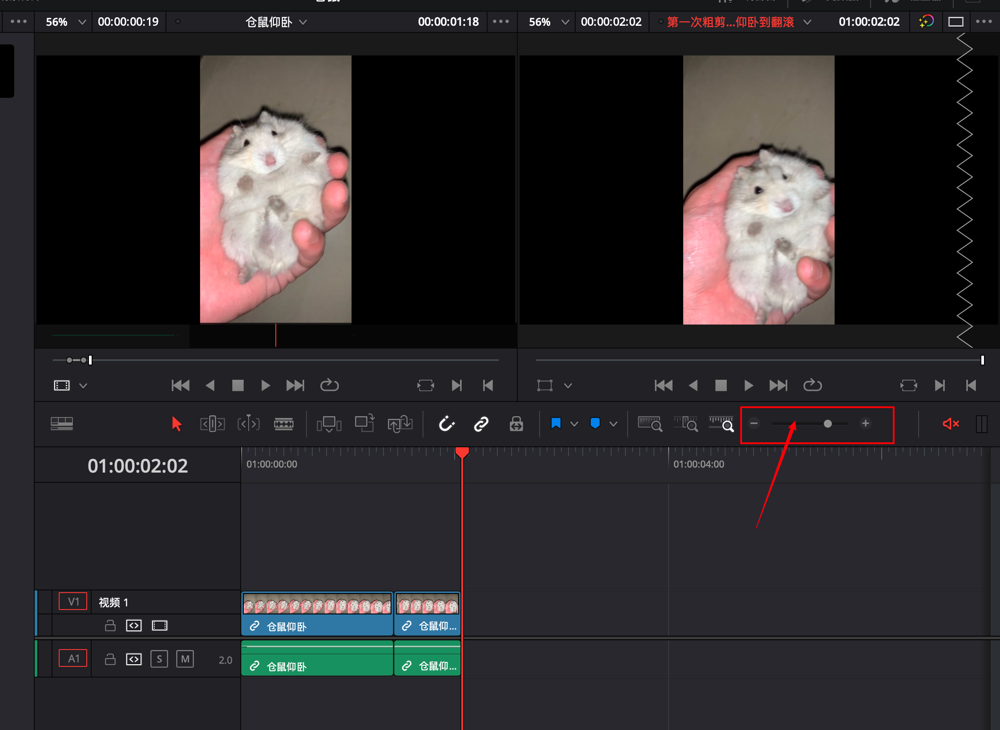

2024-03-09
达芬奇
修改于: 2024-03-09系统: MAC
快捷操作
- Command + P: 右键视频设置标志帧: 可以理解为设置图片封面
- I: 标记入点
- O: 标记出点, 跟上一个配合可以截取视频片段
- Comand + +: Command加加号, 放大时间线
- Comand + -: Command加减号, 缩小时间线, 与上一个可见于 时间线缩放
- Shift + Z: 对当前时间线进行适配操作(尽量能看到更多时间线)
- F9: 插入视频片段
- F10: 覆盖视频片段
- F11: 替换视频片段, 与上两个注意 插入/覆盖/替换操作时注意
- A: 选择模式, 可以拖动时间线的视频, 进行裁剪, 会替换裁减的视频帧为空白, 需手动删除此部分空白
- T: 修剪编辑模式, 上一个的改进, 自动删除被裁减的视频帧(波纹修剪)
ps: 从素材截取好片段后可以直接拖入时间线
播放快捷键(J, K, L):
- J: 倒放, 再按一次加速(可多次加速)
- K: 暂停播放
- L: 快速播放, 再按一次加速(可多次加速)
- K + J: 逐帧向后播放
- K + J(长按): 向后0.5倍速播放
- K + L: 逐帧向前播放
- K + L(长按): 向前0.5倍速播放
- 空格: 暂停/播放
- +: 加号, 向前跳转指定时间(帧)
- -: 减号, 向后跳转指定时间(帧), 与上一个可见 跳转指定时间(帧)
软件相关概念
Master工作区
主工作区
达芬奇默认维护的一个工作区, 用来管理素材分类, 开在此部分下新建文件夹
Master工作区
时间线缩放
可以将正在操作的时间线放大缩小, 其实就是视频帧的更详细/更精简

时间线缩放
向前/后跳转指定时间(帧)
剪辑时候可以在选定的媒体库指定向前/后跳转指定时间(帧),
快捷键为在媒体时, 单击 +/- (单击加号或者减号), 加号向前, 减号向后
| 出现的框中输入格式:: | 时:分:秒:帧 |
|---|
向前/后跳转指定时间(帧)
J-Cat
有些视频, 先听到人物说话的声音, 再看到人.
实际应用相当于为一个场景配音.
插入/覆盖/替换操作时注意
当插入/覆盖/替换操作(F9/F10/F11)时, 注意音频是否需要覆盖
此处是否选中决定是否对音频进行操作